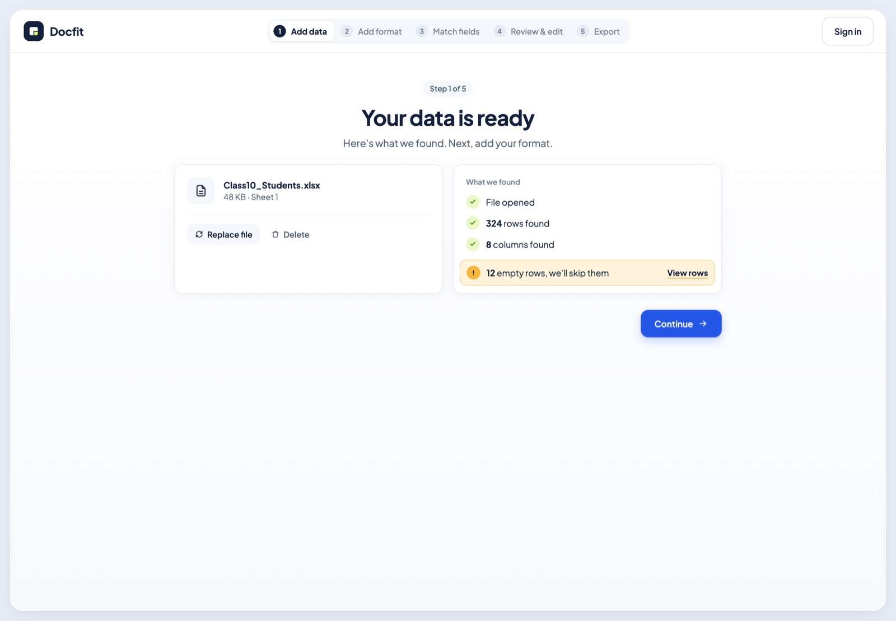
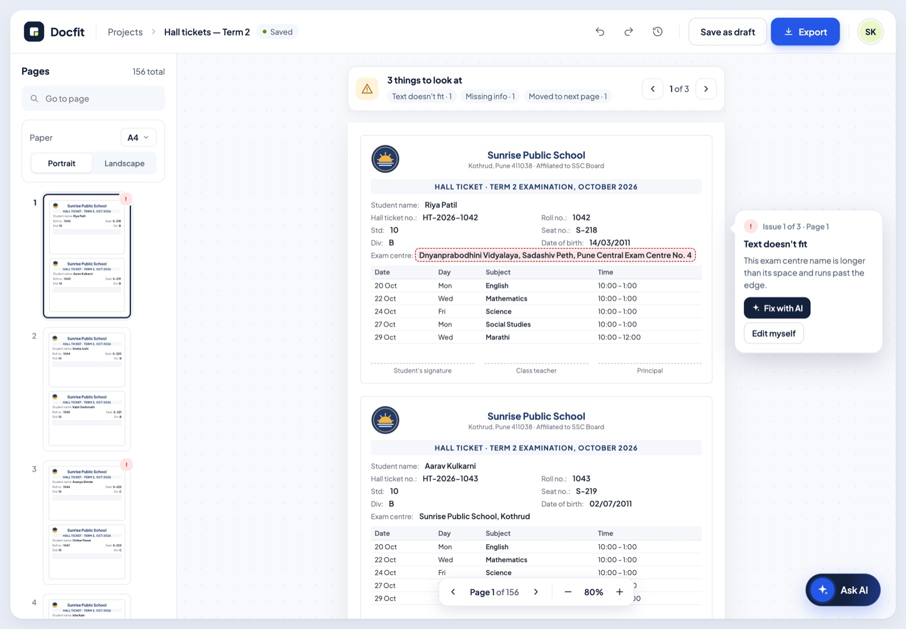
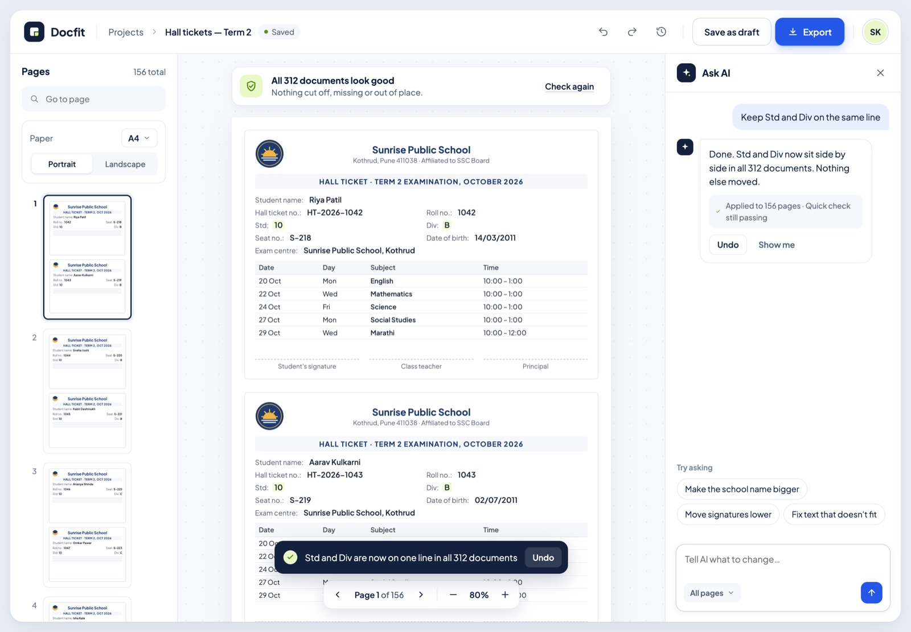

About 4 min read
DocFit
Rethinking document generation with AI.
- Role
- Solo Product Designer
- Team
- Product Designer + Development Team
00The 30-second version
- Problem
- Businesses often use mail merge to generate documents from spreadsheets and fixed templates. However, formatting issues, data changes and manual page-by-page checks make the process time-consuming and difficult to manage at scale.
- My role
- As the solo Product Designer, I designed DocFit from scratch, owning product strategy, information architecture, user flows, UI and interactive prototyping.
- Key decisions
- I designed AI-assisted field mapping with user confirmation, automated document validation to identify formatting issues, and a conversational AI correction experience that lets users fix individual or multiple pages while retaining control through suggestions, undo and version history.
About product
The challenge
Many organisations rely on spreadsheets to maintain data and fixed templates to generate documents.
Context
For example, schools use student spreadsheets and board-provided templates to create thousands of hall tickets. HR teams generate employee documents, while other industries produce standardised reports and records.
Traditional mail merge helps transfer data into templates, but struggles with real-world variations.
Key problems
Layout inconsistencies
Long names and varying data lengths can disrupt alignment and page layouts.
Manual verification
Administrators have to inspect individual pages to find formatting issues.
Time-consuming corrections
Changes to source data often require repeating the merge process and checking the generated documents again.
Poor scalability
Managing thousands of documents makes manual corrections increasingly difficult.
In one school scenario, seven classes with approximately 300 students each could mean generating and checking around 2,100 hall tickets.
The opportunity
Use AI to automate not just data merging, but also document validation and repetitive corrections.
What research showed
I spoke to school heads and to HR people at a few companies, and I had seen the same thing at places I’d worked myself.
It wasn’t only schools. I found the same pattern in HR, finance, healthcare and education: people fitting spreadsheet data into a set document by hand.
The trouble starts after the data goes in:
The tools people already use, from mail merge to general AI assistants, each solve part of this. None of them keeps a layout reliable across a big batch.
Product strategy
I defined the information architecture, navigation and end-to-end user journey around one central goal:
The goal
Make document generation, review and correction faster without taking control away from the user.
What I left out
I deliberately kept template creation and editing, along with team collaboration, outside the initial scope. This allowed the product to focus on doing one thing well: merging existing data into existing templates and handling the problems that arise.
Key design decisions
Design decisions
| Design focus | What I designed | Why it mattered |
|---|---|---|
| AI-assisted field mapping | AI matches spreadsheet columns with template fields. Users can review, edit, add or remove mappings, with uncertain matches highlighted for confirmation. | Reduces manual mapping while keeping users in control of data accuracy. |
| Automated document validation | AI identifies alignment changes, overflowing text and unexpected page shifts in generated documents. | Reduces the effort of manually inspecting every page. |
| Instruction-based corrections | Users can request changes through an AI chat panel, accept suggested fixes or apply instructions across multiple pages. | Replaces repetitive page-by-page corrections with reusable instructions. |
The core product experience
Rather than showcasing every module, I’m highlighting three key moments that communicate how DocFit works.
01 Uploading data
Users start by uploading their spreadsheet and document template. DocFit analyses the files and prepares the data for mapping.

02 Reviewing generated documents
Once the data is mapped and documents are generated, users can preview the results, navigate through pages and identify areas that need attention.

03 Correcting documents with AI
Users can interact with AI through a dedicated chat panel, describe what needs to be changed and review suggested corrections before applying them. Changes can be made to individual pages or across multiple pages.

The guiding principle
AI handles repetitive work. Users stay in control.
The complete workflow
- Upload data & template
- AI-assisted field mapping
- Generate documents
- Review & detect issues
- Correct with AI
- Export & save
Beyond the showcased experience
The product also includes supporting capabilities designed to manage the complete document lifecycle.
Supporting capabilities
Editable field mapping
Review, modify and confirm AI-suggested data mappings.
Document validation
Detect formatting inconsistencies, overflowing text and layout changes.
Version management
Revisit previous versions, undo changes and restore documents.
Workspace management
Save projects as drafts, update source data and regenerate documents.
Export and sharing
Download PDFs or editable documents and share through Google Drive or links.
Due to NDA restrictions, these additional workflows and screens are not shown in this case study.
Intended impact
DocFit is designed to help organisations:
Reduce manual effort involved in generating and checking large batches of documents.
Improve document consistency by identifying formatting and layout issues before export.
Handle data changes efficiently without repeating the entire manual correction process.
Scale document workflows across larger batches while retaining user oversight.
The product’s core experience and interactive prototype are complete, and the development team is working towards implementation.